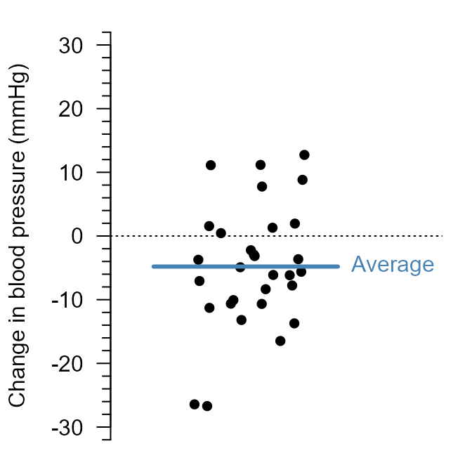
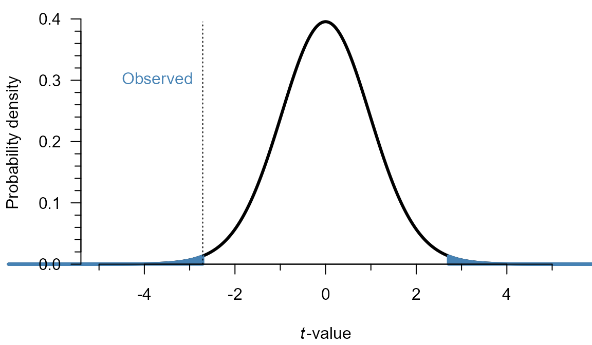
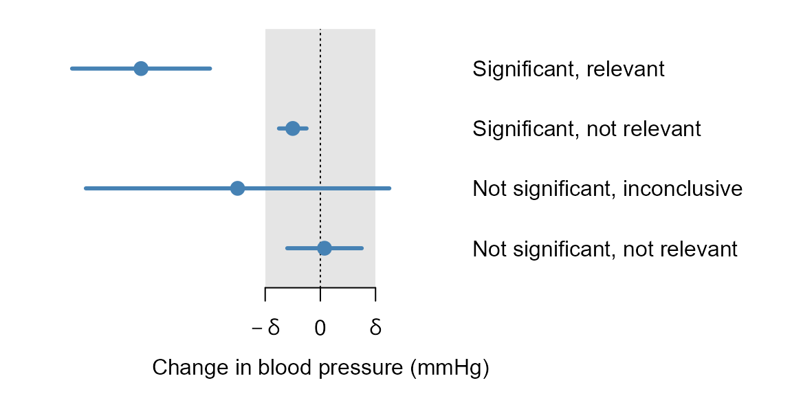

Hypothesis Testing
The reasoning behind frequentist hypothesis testing,1 using \(p\)-values.
Suppose we want to know the effect of a new compound on blood pressure. In a trial with 30 patients, blood pressure drops in some patients and rises in others. The average drop is 4.8 mmHg:
Is that enough evidence that the compound reduces blood pressure? Blood pressure varies from patient to patient, and from day to day. Even if the medicine did nothing, the average change in 30 patients would not be exactly zero.
The question is therefore not whether the average differs from zero, but whether it differs more than we would expect if it did nothing. This is the fundamental idea behind a hypothesis test:
If the compound had no effect, how often would we see a result at least as extreme as ours?
That frequency is a \(p\)-value. If it is small, our result would be surprising if there were no effect.
Procedure
Hypothesis testing consists of these steps:
- Choose a null hypothesis (\(H_0\)).
- Choose a level of significance (\(\alpha\)).
- Collect the data.
- Calculate a test statistic.
- Calculate the \(p\)-value.
- Reject \(H_0\) if \(p \leq \alpha\). Otherwise, do not reject \(H_0\).
Example: the blood pressure trial
- \(H_0\!: \mu = 0\). The medicine does not change blood pressure on average.
- Set \(\alpha = 0.05\).2
- In \(n = 30\) patients, we found a mean of \(\bar{y} = -4.8\) mmHg and standard deviation of \(s = 9.7\) mmHg.
- We can use the \(t\)-value, which is here the mean divided by its standard error: \(t = \frac{\bar{y}}{\mathrm{SE}_{\bar{y}}} = -2.7\).
- If \(H_0\) were true, a \(t\)-value at least this far from zero can be calculated to occur with probability \(p = 0.011\).
- Since \(p \leq 0.05\), we reject \(H_0\): The average decrease of 4.8 mmHg is significantly non-zero.
In the next sections, we explore how steps 4–6 work. For the \(t\)-value used in this example, step 4 first requires an estimate of the uncertainty: the standard error.
Standard error
What is the uncertainty of our estimate?
The average change, \(\bar{y} = -4.8\) mmHg, is an estimate of the true mean change \(\mu\). With \(n=30\) new patients, we would have found a different mean. The extent to which estimates differ from each other in different samples is called the standard error.3
The most straightforward way to obtain a standard error would be to repeat the clinical trial many times and see how much the decrease in blood pressure varies across samples. Thankfully for our patients, that is not necessary if we have an analytic expression for the standard error. For the sample mean \(\bar{y}\), we have such an expression:
\[\begin{align} \label{trueSEM} \tag{1}\mathrm{SE}_{\bar{y}} = \frac{\sigma}{\sqrt{n}} \end{align}\]
In practice, we do not know \(\sigma\), so we can estimate the standard error, by plugging in an estimate \(s\):
\[\begin{align} \label{SEM} \tag{2}\hat{\mathrm{SE}}_{\bar{y}} = \frac{s}{\sqrt{n}} \end{align}\]
The standard error is small if patients differ little from each other (small \(s\)), or if there are many patients (large \(n\)). Because of the square root, there are diminishing returns: Going from a sample size of \(n=30\) to \(60\) is a relatively bigger increase in sample size than going from say, \(n = 300\) to \(n = 330\), even though both increase by \(30\).
For our clinical trial, the standard error is \(\frac{9.7}{\sqrt{30}} = 1.77\) mmHg.
Test statistic
How far is our estimate from \(H_0\)?
Is a decrease of 4.8 mmHg far from zero? This can be expressed with a test statistic. For a sample mean, we can use the \(t\)-value:
\[\begin{align} \label{t} \tag{3}t = \frac{\bar{y} - \mu_0}{\mathrm{SE}}, \end{align}\]
where \(\mu_0\) is the value under the null hypothesis.4 From the formula, you can see that the \(t\)-value is large if there is a large drop in blood pressure, and if the uncertainty of the estimate is small. The \(t\)-value is essentially \(\frac{\text{difference from zero}}{\text{uncertainty}}\). The further \(t\) is from zero, the less compatible the data are with \(H_0\).
For our clinical trial, the \(t\)-value is \(\frac{-4.8 - 0}{1.77} = -2.71\).
\(p\)-value
How far from \(H_0\) is far enough?
If \(H_0\) is true, and we make certain assumptions,5 \(t\)-values follow a known distribution: a \(t\)-distribution with \(n - 1\) degrees of freedom.6 Most \(t\)-values are then close to zero, and values far from zero are rare. The \(p\)-value is the probability of a \(t\)-value at least as far from zero as ours, if \(H_0\) is true.
There is no single formula to compute a \(p\)-value: it depends on the test statistic and its distribution under \(H_0\). For the \(t\)-value, it is the area under the curve beyond the observed value, in both directions:

For our clinical trial, \(p = 0.011\) (the shaded area in Figure 2). At \(\alpha = 0.05\), we would reject \(H_0\) and conclude there is a significant decrease. Had \(p\) been larger than \(\alpha\), we would not have rejected \(H_0\), and concluded the decrease was not significant.
Confidence interval
Which values are plausible?
A \(p\)-value only tells us whether one particular value (\(\mu_0 = 0\)) can be rejected. A confidence interval shows a range of plausible values for the true mean \(\mu\). It is good practice to report not only the \(p\)-value, but also the effect size and a confidence interval.
Why 95% confidence intervals?
If you set a significance level of \(\alpha\), that corresponds to constructing a \((1 - \alpha) \times 100\%\) confidence interval. Since \(\alpha = 0.05\) is commonly used, so are 95% confidence intervals.
The 95% describes the method, not a single interval: If the trial were repeated many times, 95% of the intervals would contain the true mean \(\mu\). “Range of plausible values” is a rough interpretation. The precise definition is surprisingly unintuitive, and beyond the scope of this chapter. For an explanation, please refer to the video on confidence intervals .
For our clinical trial, the 95% confidence interval runs from -8.4 to -1.2 mmHg. Zero lies outside it, which here corresponds to \(p \leq 0.05\). Unlike the \(p\)-value, however, the interval also shows how large the effect could plausibly be.
Whether an effect matters in practice is a subject-matter judgment, not a statistical one (e.g., a drop of less than 5 mmHg may not be worth taking a medicine). Once that is decided, the interval can distinguish situations that a \(p\)-value cannot:

Error rates
A test can make two types of errors: A false positive (rejecting \(H_0\) even though it is true) and a false negative (not rejecting \(H_0\) even though it is false). These error rates are related as follows:
| \(H_0\) is false | \(H_0\) is true | |
|---|---|---|
| \(p \leq \alpha\) | True positive (\(1 - \beta\)) | False positive (\(\alpha\)) |
| \(p > \alpha\) | False negative (\(\beta\)) | True negative (\(1 - \alpha\)) |
The probability of a true positive, \(1 - \beta\), is called the power of a test: its ability to detect a real difference from \(H_0\). Unlike \(\alpha\), power is not directly chosen. It depends on the size of the true effect, \(\alpha\), \(n\) and the variance. Power calculations (for very simple tests) and simulation (for anything else) can be used to determine an appropriate sample size to attain a certain power.
Limitations of hypothesis testing
Hypothesis testing is ubiquitous in science, which is why it is important that you understand statistical significance, power, and false positives/negatives. It is also a highly criticized practice, because it is very susceptible to misuse.
- A test is never conclusive. Even if \(H_0\) is true, it rejects with probability \(\alpha\), and even if \(H_0\) is false, it may fail to reject. \(H_0\) can be shown to be implausible, but never strictly disproven. (See Error rates.)
- A test relies on assumptions (e.g., independent observations). If these do not hold, the \(p\)-value loses its meaning. (These will be covered in the following chapters.)
- A test relies on a fixed plan. The hypotheses, \(\alpha\) and the analysis must be chosen before looking at the data. Otherwise, \(p\)-values and \(\alpha\) lose their meaning.
In addition, a lot of misuse stems from misunderstanding \(p\)-values and confidence intervals. Hence, the list below contains some of the most common misconceptions.
Common misconceptions about \(p\)-values
Misinterpretations of \(p\)-values are widespread.[1]–[5] Below are some of the most frequent, based on published research and surveys of researchers.[6]–[9]
- “If \(p > 0.05\), there is no effect.”
-
Absence of evidence is not proof of absence. The effect may be too small to detect with this sample size. If the confidence interval includes effects that would matter in practice, the study is inconclusive. Only if the interval excludes all effects that would matter can we conclude that any effect is negligible.
- “The \(p\)-value is the probability that \(H_0\) is true.”
-
The \(p\)-value is the probability of a result at least as extreme as the one observed, computed assuming that \(H_0\) and all other model assumptions are true. It is not the probability that \(H_0\) is true given the data. Compare a diagnostic test: the probability of a positive result in a healthy patient is not the probability that a patient with a positive result is healthy.
- “If \(p < 0.05\), there is at most a 5% chance of a false positive.”
-
\(\alpha = 0.05\) is the chance of a significant result if \(H_0\) is true. The chance that a significant result is a false positive also depends on how often the tested effects are different from \(H_0\), and on power.[3]
- “The \(p\)-value is the probability that the result is due to chance alone.”
-
The \(p\)-value is computed by assuming that chance alone, under \(H_0\) and the model, produced the data. It cannot also be the probability of that assumption. This is a variant of the claim that the \(p\)-value is the probability that \(H_0\) is true.
- “\(1 - p\) is the probability that a replication will be significant.”
-
The chance that a replication is significant is its power, which depends on the unknown true effect. Suppose the true effect equals the observed one and the original study had \(p = 0.05\). Then a replication of the same size is significant only about half the time.[10]
- “One study is significant and another is not, so their results contradict each other.”
-
The difference between significant and not significant is not itself necessarily significant.[8], [11] To compare two studies, estimate the difference between their effects and its confidence interval. Discordant results are expected even when both studies estimate the same effect. If two independent studies each have power \(1 - \beta\), the chance that exactly one is significant is \(2\beta(1-\beta)\). At 50% power, they disagree half the time.
- “A smaller \(p\)-value means a larger or more important effect.”
-
The \(p\)-value depends on the size of the effect, its variability, and the sample size. With enough data, any nonzero effect, however negligible, is significant. The estimate and its confidence interval show the size of the effect. Whether that size matters is a subject-matter judgment.
- “Out of many tests, the significant ones are the important ones.”
-
Significance does not indicate importance, as above. Moreover, even if \(H_0\) is true, each test has a chance of \(\alpha\) of being significant. With \(k\) independent tests of true null hypotheses, the chance of at least one false positive is \(1 - (1 - \alpha)^k\). For example, among 10 comparisons, that chance is already over 40%. Without multiple testing correction, false positives are therefore likely. And estimates selected because they are significant are biased upward, especially when power is low.[12]
Common misconceptions about confidence intervals
- “95% of the observations lie in the confidence interval.”
-
A confidence interval shows the uncertainty in an estimate, like the sample mean \(\bar{y}\), not the spread of the observations. As the sample size grows, the interval narrows, but the observations remain as spread out as before.
- “There is a 95% probability that the true value lies in this interval.”
-
The 95% describes the method, not a single interval: If the study were repeated many times, 95% of the intervals would contain the true value. A single interval either contains it or not, and we cannot tell which.
- “Values inside the interval are plausible, values outside it are ruled out.”
-
The boundaries are no sharper than the significance level they come from. Values just outside the interval are hardly less compatible with the data than values just inside it.
- “If two confidence intervals overlap, the difference between them is not significant.”
-
Two 95% confidence intervals can overlap while the difference between the estimates is significant. To compare two estimates, look at the confidence interval of their difference.
- “A narrow interval means the estimate is accurate.”
-
The interval only reflects sampling variation, and only if the model assumptions hold. It says nothing about bias, for example from a flawed study design.
For the precise meaning of a confidence interval, please refer to the video on confidence intervals .
Quiz
Practice reasoning about error rates using simulated trials:
Note: This app runs entirely in your browser. The first time you open it, your browser downloads R and the packages the app needs (about 50 MB), which can take a minute or more on a slow connection. Later visits start faster, because your browser keeps most of these files.
As opposed to the main alternative, Bayesian statistics.↩︎
In many fields, including biology, \(\alpha = 0.05\) is used unless specified otherwise. This choice is baked into science, but it is also arbitrary: There is nothing special about a 5% chance.↩︎
More precisely, the standard error of an estimate is the standard deviation of the estimates you would obtain by repeatedly sampling \(n\) observations from the same population.↩︎
We can in principle compare our estimate to any number. Often, however, asking “Is there an effect?” is the same as asking “Does it differ from zero?”↩︎
In this case, independent observations and normally distributed errors. The errors are here simply the differences from the mean.↩︎
The \(t\)-distribution resembles the normal distribution, but has heavier tails. These account for the extra uncertainty of estimating \(\sigma\) by \(s\). With more observations, \(s\) becomes more precise, and the \(t\)-distribution approaches the normal distribution.↩︎